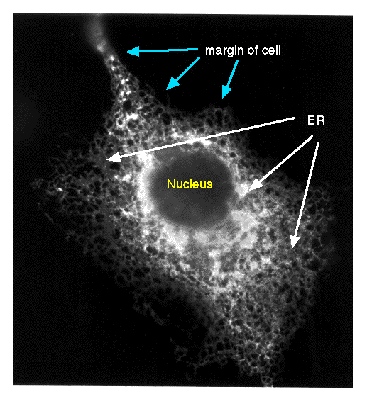

Figure 1. This immunofluorescence micrograph shows the ER being labeled with a monoclonal antibody against the the chicken Sarcoplasmic/Endoplasmic Reticulum ATPase (SERCA2) or calcium pump. The chicken cDNA was transfected into COS1 cells, and the cells were later fixed, permeablilized, and processed for indirect immunofluorescence. This photograph was taken by Dr. A. Malcolm Campbell.
© Copyright 2000 Department of Biology,
Davidson College, Davidson, NC 28036
Send comments, questions, and suggestions to: macampbell@davidson.edu